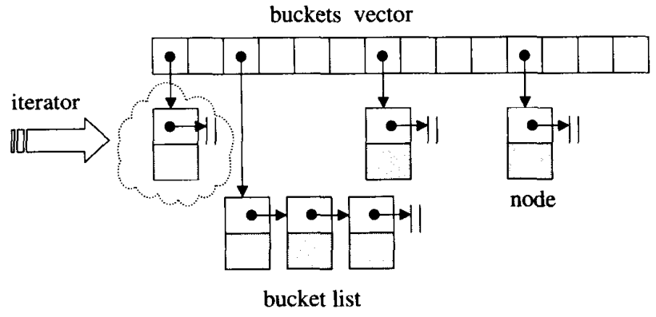
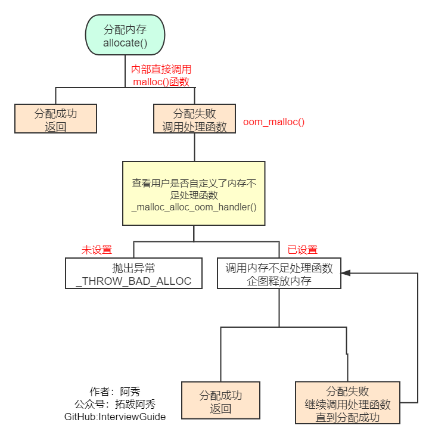

C++之STL模板库
这是六则或许对你有些许帮助的信息:
⭐️1、阿秀与朋友合作开发了一个编程资源网站，目前已经收录了很多不错的学习资源和黑科技（附带下载地址），如过你想要寻求合适的编程资源，欢迎体验以及推荐自己认为不错的资源，众人拾柴火焰高，我为人人，人人为我🔥！
2、👉23年5月份阿秀从字节跳动离职跳槽到某外企期间，为方便自己找工作，增加上岸几率，我自己从0开发了一个互联网中大厂面试真题解析网站，包括两个前端和一个后端。能够定向查看某些公司的某些岗位面试真题，比如我想查一下行业为互联网，公司为字节跳动，考察岗位为后端，考察时间为最近一年之类的面试题有哪些？
4、😍免费分享阿秀个人学习计算机以来收集到的免费学习资源，点此白嫖；也记录一下自己以前买过的不错的计算机书籍、网络专栏和垃圾付费专栏；也记录一下自己以前买过的不错的计算机书籍、网络专栏和垃圾付费专栏
5、🚀如果你想在校招中顺利拿到更好的offer，阿秀建议你多看看前人踩过的坑和留下的经验，事实上你现在遇到的大多数问题你的学长学姐师兄师姐基本都已经遇到过了。
6、🔥 欢迎准备计算机校招的小伙伴加入我的学习圈子，一个人踽踽独行不如一群人报团取暖，圈子里沉淀了很多过去21/22/23/24/25届学长学姐的经验和总结，好好跟着走下去的，最后基本都可以拿到不错的offer！如果你需要《阿秀的学习笔记》网站中📚︎校招八股文相关知识点的PDF版本的话，可以点此下载 。
1、什么是STL？
C++ STL从广义来讲包括了三类：算法，容器和迭代器。
- 算法包括排序，复制等常用算法，以及不同容器特定的算法。
- 容器就是数据的存放形式，包括序列式容器和关联式容器，序列式容器就是list，vector等，关联式容器就是set，map等。
- 迭代器就是在不暴露容器内部结构的情况下对容器的遍历。
2、解释一下什么是trivial destructor
“trivial destructor”一般是指用户没有自定义析构函数，而由系统生成的，这种析构函数在《STL源码解析》中成为“无关痛痒”的析构函数。
反之，用户自定义了析构函数，则称之为“non-trivial destructor”，这种析构函数如果申请了新的空间一定要显式的释放，否则会造成内存泄露
对于trivial destructor，如果每次都进行调用，显然对效率是一种伤害，如何进行判断呢？
《STL源码解析》中给出的说明是:
首先利用value_type()获取所指对象的型别，再利用__type_traits\
也就是说，在实际的应用当中，STL库提供了相关的判断方法__type_traits，感兴趣的读者可以自行查阅使用方式。除了trivial destructor，还有trivial construct、trivial copy construct等，如果能够对是否trivial进行区分，可以采用内存处理函数memcpy()、malloc()等更加高效的完成相关操作，提升效率。
3、使用智能指针管理内存资源，RAII是怎么回事？
1) RAII全称是“Resource Acquisition is Initialization”，直译过来是“资源获取即初始化”，也就是说在构造函数中申请分配资源，在析构函数中释放资源。
因为C++的语言机制保证了，当一个对象创建的时候，自动调用构造函数，当对象超出作用域的时候会自动调用析构函数。所以，在RAII的指导下，我们应该使用类来管理资源，将资源和对象的生命周期绑定。
2) 智能指针（std::shared_ptr和std::unique_ptr）即RAII最具代表的实现，使用智能指针，可以实现自动的内存管理，再也不需要担心忘记delete造成的内存泄漏。
毫不夸张的来讲，有了智能指针，代码中几乎不需要再出现delete了。
4、迭代器：++it、it++哪个好，为什么
1) 前置返回一个引用，后置返回一个对象
2) 前置不会产生临时对象，后置必须产生临时对象，临时对象会导致效率降低
5、说一下C++左值引用和右值引用
C++11正是通过引入右值引用来优化性能，具体来说是通过移动语义来避免无谓拷贝的问题，通过move语义来将临时生成的左值中的资源无代价的转移到另外一个对象中去，通过完美转发来解决不能按照参数实际类型来转发的问题（同时，完美转发获得的一个好处是可以实现移动语义）。
- 在C++11中所有的值必属于左值、右值两者之一，右值又可以细分为纯右值、将亡值。在C++11中可以取地址的、有名字的就是左值，反之，不能取地址的、没有名字的就是右值（将亡值或纯右值）。
举个例子，int a = b+c, a 就是左值，其有变量名为a，通过&a可以获取该变量的地址；表达式b+c、函数int func()的返回值是右值，在其被赋值给某一变量前，我们不能通过变量名找到它，＆(b+c)这样的操作则不会通过编译。
- C++11对C++98中的右值进行了扩充。在C++11中右值又分为纯右值（prvalue，Pure Rvalue）和将亡值（xvalue，eXpiring Value）。
其中纯右值的概念等同于我们在C++98标准中右值的概念，指的是临时变量和不跟对象关联的字面量值；将亡值则是C++11新增的跟右值引用相关的表达式，这样表达式通常是将要被移动的对象（移为他用），比如返回右值引用T&&的函数返回值、std::move的返回值，或者转换为T&&的类型转换函数的返回值。将亡值可以理解为通过“盗取”其他变量内存空间的方式获取到的值。在确保其他变量不再被使用、或即将被销毁时，通过“盗取”的方式可以避免内存空间的释放和分配，能够延长变量值的生命期。
- 左值引用就是对一个左值进行引用的类型。右值引用就是对一个右值进行引用的类型，事实上，由于右值通常不具有名字，我们也只能通过引用的方式找到它的存在。
右值引用和左值引用都是属于引用类型。无论是声明一个左值引用还是右值引用，都必须立即进行初始化。而其原因可以理解为是引用类型本身自己并不拥有所绑定对象的内存，只是该对象的一个别名。左值引用是具名变量值的别名，而右值引用则是不具名（匿名）变量的别名。
左值引用通常也不能绑定到右值，但常量左值引用是个“万能”的引用类型。它可以接受非常量左值、常量左值、右值对其进行初始化。不过常量左值所引用的右值在它的“余生”中只能是只读的。相对地，非常量左值只能接受非常量左值对其进行初始化。
4) 右值值引用通常不能绑定到任何的左值，要想绑定一个左值到右值引用，通常需要std::move()将左值强制转换为右值。
左值和右值
左值：表示的是可以获取地址的表达式，它能出现在赋值语句的左边，对该表达式进行赋值。但是修饰符const的出现使得可以声明如下的标识符，它可以取得地址，但是没办法对其进行赋值
| C++ | |
|---|---|
右值：表示无法获取地址的对象，有常量值、函数返回值、lambda表达式等。无法获取地址，但不表示其不可改变，当定义了右值的右值引用时就可以更改右值。
左值引用和右值引用
左值引用：传统的C++中引用被称为左值引用
右值引用：C++11中增加了右值引用，右值引用关联到右值时，右值被存储到特定位置，右值引用指向该特定位置，也就是说，右值虽然无法获取地址，但是右值引用是可以获取地址的，该地址表示临时对象的存储位置
这里主要说一下右值引用的特点：
- 特点1：通过右值引用的声明，右值又“重获新生”，其生命周期与右值引用类型变量的生命周期一样长，只要该变量还活着，该右值临时量将会一直存活下去
- 特点2：右值引用独立于左值和右值。意思是右值引用类型的变量可能是左值也可能是右值
- 特点3：T&& t在发生自动类型推断的时候，它是左值还是右值取决于它的初始化。
举个例子：
6、STL中hashtable的实现？
STL中的hashtable使用的是开链法解决hash冲突问题，如下图所示。

hashtable中的bucket所维护的list既不是list也不是slist，而是其自己定义的由hashtable_node数据结构组成的linked-list，而bucket聚合体本身使用vector进行存储。hashtable的迭代器只提供前进操作，不提供后退操作
在hashtable设计bucket的数量上，其内置了28个质数[53, 97, 193,...,429496729]，在创建hashtable时，会根据存入的元素个数选择大于等于元素个数的质数作为hashtable的容量（vector的长度），其中每个bucket所维护的linked-list长度也等于hashtable的容量。
如果插入hashtable的元素个数超过了bucket的容量，就要进行重建table操作，即找出下一个质数，创建新的buckets vector，重新计算元素在新hashtable的位置。
7、简单说一下traits技法
traits技法利用“内嵌型别“的编程技巧与编译器的template参数推导功能，增强C++未能提供的关于型别认证方面的能力。常用的有iterator_traits和type_traits。
iterator_traits
被称为特性萃取机，能够方便的让外界获取以下5种型别：
- value_type：迭代器所指对象的型别
- difference_type：两个迭代器之间的距离
- pointer：迭代器所指向的型别
- reference：迭代器所引用的型别
- iterator_category：三两句说不清楚，建议看书
type_traits
关注的是型别的特性，例如这个型别是否具备non-trivial defalt ctor（默认构造函数）、non-trivial copy ctor（拷贝构造函数）、non-trivial assignment operator（赋值运算符） 和non-trivial dtor（析构函数），如果答案是否定的，可以采取直接操作内存的方式提高效率，一般来说，type_traits支持以下5中类型的判断：
| C++ | |
|---|---|
由于编译器只针对class object形式的参数进行参数推到，因此上式的返回结果不应该是个bool值，实际上使用的是一种空的结构体：
| C++ | |
|---|---|
这两个结构体没有任何成员，不会带来其他的负担，又能满足需求，可谓一举两得
当然，如果我们自行定义了一个Shape类型，也可以针对这个Shape设计type_traits的特化版本
| C++ | |
|---|---|
感谢微信好友“铁锤哥哥”勘误：“特性萃取机处” 方面->方便 ， 中->种-2021.06.28
8、STL的两级空间配置器
1、首先明白为什么需要二级空间配置器？
我们知道动态开辟内存时，要在堆上申请，但若是我们需要
频繁的在堆开辟释放内存，则就会在堆上造成很多外部碎片，浪费了内存空间；
每次都要进行调用malloc、free函数等操作，使空间就会增加一些附加信息，降低了空间利用率；
随着外部碎片增多，内存分配器在找不到合适内存情况下需要合并空闲块，浪费了时间，大大降低了效率。
于是就设置了二级空间配置器，当开辟内存<=128bytes时，即视为开辟小块内存，则调用二级空间配置器。
关于STL中一级空间配置器和二级空间配置器的选择上，一般默认选择的为二级空间配置器。 如果大于128字节再转去一级配置器器。
一级配置器
一级空间配置器中重要的函数就是allocate、deallocate、reallocate 。 一级空间配置器是以malloc()，free()，realloc()等C函数执行实际的内存配置 。大致过程是：
1、直接allocate分配内存，其实就是malloc来分配内存，成功则直接返回，失败就调用处理函数
2、如果用户自定义了内存分配失败的处理函数就调用，没有的话就返回异常
3、如果自定义了处理函数就进行处理，完事再继续分配试试

二级配置器

1、维护16条链表，分别是0-15号链表，最小8字节，以8字节逐渐递增，最大128字节，你传入一个字节参数，表示你需要多大的内存，会自动帮你校对到第几号链表（如需要13bytes空间，我们会给它分配16bytes大小），在找到第n个链表后查看链表是否为空，如果不为空直接从对应的free_list中拔出，将已经拨出的指针向后移动一位。
2、对应的free_list为空，先看其内存池是不是空时，如果内存池不为空： （1）先检验它剩余空间是否够20个节点大小（即所需内存大小(提升后) * 20），若足够则直接从内存池中拿出20个节点大小空间，将其中一个分配给用户使用，另外19个当作自由链表中的区块挂在相应的free_list下，这样下次再有相同大小的内存需求时，可直接拨出。 （2）如果不够20个节点大小，则看它是否能满足1个节点大小，如果够的话则直接拿出一个分配给用户，然后从剩余的空间中分配尽可能多的节点挂在相应的free_list中。 （3）如果连一个节点内存都不能满足的话，则将内存池中剩余的空间挂在相应的free_list中（找到相应的free_list），然后再给内存池申请内存，转到3。 3、内存池为空，申请内存 此时二级空间配置器会使用malloc()从heap上申请内存，（一次所申请的内存大小为2 * 所需节点内存大小（提升后）* 20 + 一段额外空间），申请40块，一半拿来用，一半放内存池中。 4、malloc没有成功 在第三种情况下，如果malloc()失败了，说明heap上没有足够空间分配给我们了，这时，二级空间配置器会从比所需节点空间大的free_list中一一搜索，从比它所需节点空间大的free_list中拔除一个节点来使用。如果这也没找到，说明比其大的free_list中都没有自由区块了，那就要调用一级适配器了。
释放时调用deallocate()函数，若释放的n>128，则调用一级空间配置器，否则就直接将内存块挂上自由链表的合适位置。
STL二级空间配置器虽然解决了外部碎片与提高了效率，但它同时增加了一些缺点：
1.因为自由链表的管理问题，它会把我们需求的内存块自动提升为8的倍数，这时若你需要1个字节，它会给你8个字节，即浪费了7个字节，所以它又引入了内部碎片的问题，若相似情况出现很多次，就会造成很多内部碎片；
2.二级空间配置器是在堆上申请大块的狭义内存池，然后用自由链表管理，供现在使用，在程序执行过程中，它将申请的内存一块一块都挂在自由链表上，即不会还给操作系统，并且它的实现中所有成员全是静态的，所以它申请的所有内存只有在进程结束才会释放内存，还给操作系统，由此带来的问题有：1.即我不断的开辟小块内存，最后整个堆上的空间都被挂在自由链表上，若我想开辟大块内存就会失败；2.若自由链表上挂很多内存块没有被使用，当前进程又占着内存不释放，这时别的进程在堆上申请不到空间，也不可以使用当前进程的空闲内存，由此就会引发多种问题。
一级分配器
GC4.9之后就没有第一级了，只有第二级
二级分配器
——default_alloc_template 剖析
有个自动调整的函数：你传入一个字节参数，表示你需要多大的内存，会自动帮你校对到第几号链表（0-15号链表，最小8字节 最大128字节）
allocate函数：如果要分配的内存大于128字节，就转用第一级分配器，否则也就是小于128字节。那么首先判断落在第几号链表，定位到了，先判断链表是不是空，如果是空就需要充值，（调节到8的倍数，默认一次申请20个区块。
当然了也要判断20个是不是能够申请到，如果只申请到一个那就直接返回好了，不止一个的话，把第2到第n个挨个挂到当前链表上，第一个返回回去给容器用,n是不大于20的；
如果不在1-20之间，那就是内存碎片了，那就先把碎片挂到某一条链表上，然后再重新malloc了，malloc 2*20个块）去内存池去拿或者重新分配。不为空的话
9、 vector与list的区别与应用？怎么找某vector或者list的倒数第二个元素
1) vector数据结构 vector和数组类似，拥有一段连续的内存空间，并且起始地址不变。因此能高效的进行随机存取，时间复杂度为o(1);但因为内存空间是连续的，所以在进行插入和删除操作时，会造成内存块的拷贝，时间复杂度为o(n)。
另外，当数组中内存空间不够时，会重新申请一块内存空间并进行内存拷贝。连续存储结构：vector是可以实现动态增长的对象数组，支持对数组高效率的访问和在数组尾端的删除和插入操作，在中间和头部删除和插入相对不易，需要挪动大量的数据。
它与数组最大的区别就是vector不需程序员自己去考虑容量问题，库里面本身已经实现了容量的动态增长，而数组需要程序员手动写入扩容函数进形扩容。
2) list数据结构 list是由双向链表实现的，因此内存空间是不连续的。只能通过指针访问数据，所以list的随机存取非常没有效率，时间复杂度为o(n);但由于链表的特点，能高效地进行插入和删除。非连续存储结构：list是一个双链表结构，支持对链表的双向遍历。每个节点包括三个信息：元素本身，指向前一个元素的节点（prev）和指向下一个元素的节点（next）。因此list可以高效率的对数据元素任意位置进行访问和插入删除等操作。由于涉及对额外指针的维护，所以开销比较大。
区别：
- vector的随机访问效率高，但在插入和删除时（不包括尾部）需要挪动数据，不易操作。
- list的访问要遍历整个链表，它的随机访问效率低。但对数据的插入和删除操作等都比较方便，改变指针的指向即可。
- 从遍历上来说，list是单向的，vector是双向的。
- vector中的迭代器在使用后就失效了，而list的迭代器在使用之后还可以继续使用。
3)
int mySize = vec.size();vec.at(mySize -2);
list不提供随机访问，所以不能用下标直接访问到某个位置的元素，要访问list里的元素只能遍历，不过你要是只需要访问list的最后N个元素的话，可以用反向迭代器来遍历：
10、STL 中vector删除其中的元素，迭代器如何变化？为什么是两倍扩容？释放空间？
size()函数返回的是已用空间大小，capacity()返回的是总空间大小，capacity()-size()则是剩余的可用空间大小。当size()和capacity()相等，说明vector目前的空间已被用完，如果再添加新元素，则会引起vector空间的动态增长。
由于动态增长会引起重新分配内存空间、拷贝原空间、释放原空间，这些过程会降低程序效率。因此，可以使用reserve(n)预先分配一块较大的指定大小的内存空间，这样当指定大小的内存空间未使用完时，是不会重新分配内存空间的，这样便提升了效率。只有当n>capacity()时，调用reserve(n)才会改变vector容量。
resize()成员函数改变元素的数目，至于空间的的变化需要看具体情况去分析，如下：
| C | |
|---|---|
1、空的vector对象，size()和capacity()都为0
2、当空间大小不足时，新分配的空间大小为原空间大小的2倍。
3、使用reserve()预先分配一块内存后，在空间未满的情况下，不会引起重新分配，从而提升了效率。
4、当reserve()分配的空间比原空间小时，是不会引起重新分配的。
5、resize()函数只改变容器的元素数目，未改变容器大小。
6、用reserve(size_type)只是扩大capacity值，这些内存空间可能还是“野”的，如果此时使用“[ ]”来访问，则可能会越界。而resize(size_type new_size)会真正使容器具有new_size个对象。
不同的编译器，vector有不同的扩容大小。在vs下是1.5倍，在GCC下是2倍；
空间和时间的权衡。简单来说， 空间分配的多，平摊时间复杂度低，但浪费空间也多。
使用k=2增长因子的问题在于，每次扩展的新尺寸必然刚好大于之前分配的总和，也就是说，之前分配的内存空间不可能被使用。这样对内存不友好，最好把增长因子设为(1, 2)，也就是1-2之间的某个数值。
对比可以发现采用采用成倍方式扩容，可以保证常数的时间复杂度，而增加指定大小的容量只能达到O(n)的时间复杂度，因此，使用成倍的方式扩容。
谢谢网友指出错误：https://github.com/forthespada/InterviewGuide/issues/9，现已改正！- 2021.09.03
11、Vector如何释放空间?
由于vector的内存占用空间只增不减，比如你首先分配了10,000个字节，然后erase掉后面9,999个，留下一个有效元素，但是内存占用仍为10,000个。所有内存空间是在vector析构时候才能被系统回收。
empty()用来检测容器是否为空的，clear()可以清空所有元素。但是即使clear()，vector所占用的内存空间依然如故，无法保证内存的回收。
如果需要空间动态缩小，可以考虑使用deque。
如果使用vector，可以用swap()来帮助你释放多余内存或者清空全部内存。
实例
12、容器内部删除一个元素
1) 顺序容器（序列式容器，比如vector、deque）
erase迭代器不仅使所指向被删除的迭代器失效，而且使被删元素之后的所有迭代器失效(list除外)，所以不能使用erase(it++)的方式，但是erase的返回值是下一个有效迭代器；
It = c.erase(it);
2) 关联容器(关联式容器，比如map、set、multimap、multiset等)
erase迭代器只是被删除元素的迭代器失效，但是返回值是void，所以要采用erase(it++)的方式删除迭代器；
c.erase(it++)
13、STL迭代器如何实现
1、 迭代器是一种抽象的设计理念，通过迭代器可以在不了解容器内部原理的情况下遍历容器，除此之外，STL中迭代器一个最重要的作用就是作为容器与STL算法的粘合剂。
2、 迭代器的作用就是提供一个遍历容器内部所有元素的接口，因此迭代器内部必须保存一个与容器相关联的指针，然后重载各种运算操作来遍历，其中最重要的是*运算符与->运算符，以及++、--等可能需要重载的运算符重载。
这和C++中的智能指针很像，智能指针也是将一个指针封装，然后通过引用计数或是其他方法完成自动释放内存的功能。
3、最常用的迭代器的相应型别有五种：value type、difference type、pointer、reference、iterator catagoly;
14、map、set是怎么实现的，红黑树是怎么能够同时实现这两种容器？ 为什么使用红黑树？
1) 他们的底层都是以红黑树的结构实现，因此插入删除等操作都在O(logn时间内完成，因此可以完成高效的插入删除；
2) 在这里我们定义了一个模版参数，如果它是key那么它就是set，如果它是map，那么它就是map；底层是红黑树，实现map的红黑树的节点数据类型是key+value，而实现set的节点数据类型是value
3) 因为map和set要求是自动排序的，红黑树能够实现这一功能，而且时间复杂度比较低。
15、如何在共享内存上使用STL标准库？
1) 想像一下把STL容器，例如map, vector, list等等，放入共享内存中，IPC一旦有了这些强大的通用数据结构做辅助，无疑进程间通信的能力一下子强大了很多。
我们没必要再为共享内存设计其他额外的数据结构，另外，STL的高度可扩展性将为IPC所驱使。STL容器被良好的封装，默认情况下有它们自己的内存管理方案。
当一个元素被插入到一个STL列表(list)中时，列表容器自动为其分配内存，保存数据。考虑到要将STL容器放到共享内存中，而容器却自己在堆上分配内存。
一个最笨拙的办法是在堆上构造STL容器，然后把容器复制到共享内存，并且确保所有容器的内部分配的内存指向共享内存中的相应区域，这基本是个不可能完成的任务。
2) 假设进程A在共享内存中放入了数个容器，进程B如何找到这些容器呢？
一个方法就是进程A把容器放在共享内存中的确定地址上（fixed offsets），则进程B可以从该已知地址上获取容器。另外一个改进点的办法是，进程A先在共享内存某块确定地址上放置一个map容器，然后进程A再创建其他容器，然后给其取个名字和地址一并保存到这个map容器里。
进程B知道如何获取该保存了地址映射的map容器，然后同样再根据名字取得其他容器的地址。
16、map插入方式有哪几种？
1) 用insert函数插入pair数据，
| C++ | |
|---|---|
2) 用insert函数插入value_type数据
| C++ | |
|---|---|
3) 在insert函数中使用make_pair()函数
| C++ | |
|---|---|
4) 用数组方式插入数据
| C++ | |
|---|---|
17、STL中unordered_map(hash_map)和map的区别，hash_map如何解决冲突以及扩容
1) unordered_map和map类似，都是存储的key-value的值，可以通过key快速索引到value。不同的是unordered_map不会根据key的大小进行排序，
2) 存储时是根据key的hash值判断元素是否相同，即unordered_map内部元素是无序的，而map中的元素是按照二叉搜索树存储，进行中序遍历会得到有序遍历。
3) 所以使用时map的key需要定义operator<。而unordered_map需要定义hash_value函数并且重载operator==。但是很多系统内置的数据类型都自带这些，
4) 那么如果是自定义类型，那么就需要自己重载operator<或者hash_value()了。
5) 如果需要内部元素自动排序，使用map，不需要排序使用unordered_map
6) unordered_map的底层实现是hash_table;
7) hash_map底层使用的是hash_table，而hash_table使用的开链法进行冲突避免，所有hash_map采用开链法进行冲突解决。
8) 什么时候扩容：当向容器添加元素的时候，会判断当前容器的元素个数，如果大于等于阈值---即当前数组的长度乘以加载因子的值的时候，就要自动扩容啦。
9) 扩容(resize)就是重新计算容量，向HashMap对象里不停的添加元素，而HashMap对象内部的数组无法装载更多的元素时，对象就需要扩大数组的长度，以便能装入更多的元素。
18、vector越界访问下标，map越界访问下标？vector删除元素时会不会释放空间？
1) 通过下标访问vector中的元素时会做边界检查，但该处的实现方式要看具体IDE，不同IDE的实现方式不一样，确保不可访问越界地址。
2) map的下标运算符[]的作用是：将key作为下标去执行查找，并返回相应的值；如果不存在这个key，就将一个具有该key和value的某人值插入这个map。
3) erase()函数，只能删除内容，不能改变容量大小;
erase成员函数，它删除了itVect迭代器指向的元素，并且返回要被删除的itVect之后的迭代器，迭代器相当于一个智能指针;clear()函数，只能清空内容，不能改变容量大小;如果要想在删除内容的同时释放内存，那么你可以选择deque容器。
update1:感谢微信好友“猿六学算法”指出错误，已修正！
update2:感谢微信好友“铁锤哥哥”勘误：“vector边界检查”-> 具体看IDE的实现方式，但是不可取越界地址-2021.06.28
19、map中[]与find的区别？
1) map的下标运算符[]的作用是：将关键码作为下标去执行查找，并返回对应的值；如果不存在这个关键码，就将一个具有该关键码和值类型的默认值的项插入这个map。
2) map的find函数：用关键码执行查找，找到了返回该位置的迭代器；如果不存在这个关键码，就返回尾迭代器。
20、 STL中list与queue之间的区别
1) list不再能够像vector一样以普通指针作为迭代器，因为其节点不保证在存储空间中连续存在；
2) list不仅是一个双向链表，而且还是一个环状双向链表，所以它只需要一个指针；
3) list不像vector那样有可能在空间不足时做重新配置、数据移动的操作，所以插入前的所有迭代器在插入操作之后都仍然有效；
4) deque是一种双向开口的连续线性空间，所谓双向开口，意思是可以在头尾两端分别做元素的插入和删除操作；
5) deque和vector最大的差异，一在于deque允许常数时间内对起头端进行元素的插入或移除操作；二在于deque没有所谓容量概念，因为它是动态地以分段连续空间组合而成，随时可以增加一段新的空间并链接起来，deque没有所谓的空间保留功能。